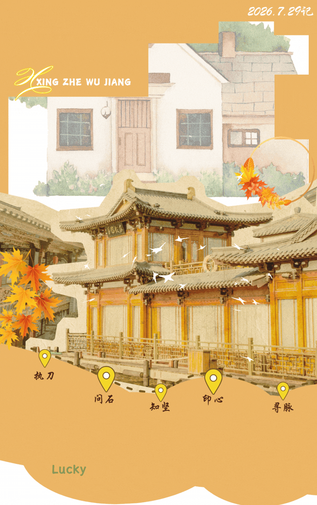
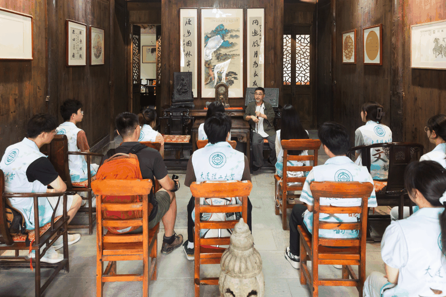
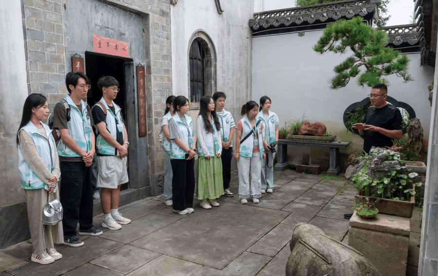
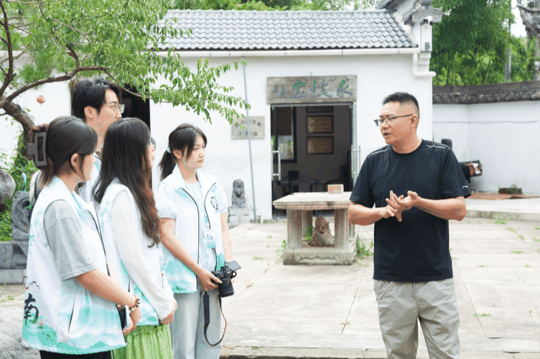
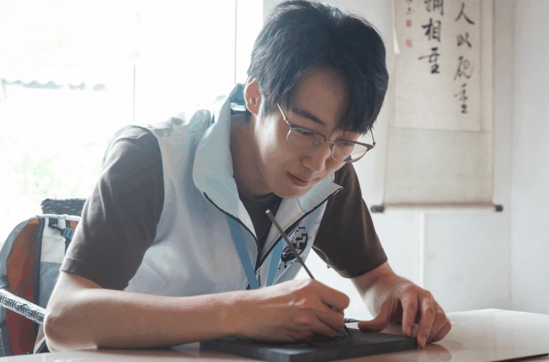

【行者无疆·文韵皖南】行者问石，镌刀篆刻千秋岁


青岩凝岁月,刀刻藏山河
一方顽石
经匠人双手雕琢成徽州风骨
一席教诲
以赤子初心传递代代坚守
青年踏至休宁工坊，握刀观石
于粗粝石材间
读懂非遗镌刻的东方美学
01
青山藏石韵，古建续徽风


结束首日徽州文博与糕饼非遗之行，行者无疆实践团前往休宁县宇博古建园林工艺厂，赴一场与徽州石雕的深度之约。作为徽派古建核心技艺之一，徽州石雕与砖雕、木雕并称“徽州三雕”，是载入名录的珍贵非遗，广泛运用于牌坊、祠堂、民居、园林之中，以坚硬石材承载徽州人的审美、礼制与精神。
缓步步入石雕工艺厂区，大小石材依区域错落排布，场面开阔而沉静。未经雕琢的原石粗粝苍劲，带着山石原生的厚重质感，静默伫立尽显大地本真的气韵；已然竣工的石雕作品千姿百态，细腻繁复的纹饰婉转流畅，刀法疏密有致。长廊陈列的观赏摆件、仿古石刻建筑构件静静伫立，深浅纹路裹挟着岁月沉淀下来的古朴庄穆之气，顷刻隔绝外界喧嚣，将众人全然带入徽州石刻绵延千年的传承氛围之中。
一代代守艺匠人固守此间方寸工坊，朝夕与青石为伴，以刻刀为笔、以顽石为纸，潜心打磨肌理、精工镌刻纹样。枯燥重复的凿刻不曾中断古法脉络，严谨细致的雕琢不断赋予石材全新生机，让这项古老的石雕技艺挣脱岁月桎梏，在代代接续的坚守与创新之中不断赓续文脉，在当下焕发出经久不衰的鲜活生命力。
02
大师传匠道，初心育后学
本次寻访，我们有幸聆听方韶大师分享徽州石雕的千年脉络与育人初心。从唐宋萌芽到明清鼎盛，徽州石雕依托徽商兴盛、宗族营建蓬勃发展，纹样兼顾祥瑞寓意与文人意趣，一刀一画皆藏徽州独有的雅致审美。
点我一下
谈及收徒授艺，方韶大师一席话令全体队员深受触动。他深耕石雕数十载，传道授徒分文不取，却对弟子心性、耐力有着极为严苛的要求。石材坚硬冰冷，雕刻耗时费力，起稿、打粗、修细、打磨，每一步都要沉下心经年累月反复练习，吃苦耐劳是学艺第一道门槛。大师言，石雕之道，先修人，再修艺，耐得住顽石打磨的苦，方能刻出温润传神的佳作。这番朴素真挚的匠人理念，让我们读懂非遗美育不止学技艺，更重品格修行。


随后，胡荣军老师带领我们逐一参观厂区各类石雕成品与半成品，细致区分栏板、抱鼓石、石刻窗花、园林造景石雕等不同品类，运刀轻重、线条疏密皆有章法，小至方寸石刻摆件，大至整座古建牌坊构件，处处藏着匠人平衡虚实、勾勒意境的美学巧思。
03
执刀亲刻石，指尖悟匠心
理论知识讲解落幕，众人正式踏入石刻非遗的沉浸式实操环节。各位队员轮番手执刻刀、固定石料，效仿传统匠人的手法勾勒图样、落刀雕琢。青石质地紧实粗粝，运刀极考究分寸，力道偏弱，纹路难以入石成型。发力过猛，石料极易崩茬开裂，破坏整体纹样布局。仅是基础的线条描摹，便要时刻把控手腕角度与下刀深浅，不消多时，所有人手腕紧绷发酸，指尖被刀柄硌得发胀，切身体会到老辈石雕匠人经年累月伏案凿石、日日与顽石相伴的辛劳与不易。
秋风轻拂
落叶铺成金色的诗行
每一片都镌刻着岁月的故事
缓缓步入这温柔的秋意中
自徽州山峦撷一方青石
收纳漫卷千载的晚风
疏密刀痕镂刻旧事
把耕读遗梦嵌进石纹之中
无言顽石承载岁月沉厚
让牌坊、窗棂，留住古邑旧容


往昔游历徽州古祠牌坊、街巷石阶，我们仅是远远观赏石刻纹样的精巧雅致，隔着时空赞叹工艺绝美。待到亲身握刀雕琢，以指尖、刀刃与坚硬石材真切相融，方才读懂每一缕顺滑线条、每一寸精致肌理的来之不易，皆是匠人熬过无数寒暑、反复试错打磨沉淀的成果。冰冷坚硬的青石本无神韵，凭借长久的静心雕琢，便可雕琢出百态景致、万般气韵。这份藏于刀锋石迹间的坚守，构筑起石雕非遗独有的厚重风骨与刚劲力量，也让我们真切领悟传统手工艺背后，匠心与恒心兼具的深层价值。

徽州石雕从不是孤立的装饰工艺，它扎根徽州宗族文化、古建营造传统，以石头为载体，将山水诗意尽数留存。方韶大师不计得失、苦育学徒的坚守，胡荣军老师细致传道、深耕技艺的热忱，正是非遗能够代代延续的根基。
以青年之手触摸刻刀，以少年之心体悟匠魂。此次休宁石雕之行，让我们看见非遗里关于坚守、沉淀与磨砺的独特一课。往后我们也将带着这份从顽石与刻刀间收获的感悟，持续行走徽州大地，记录多样非遗风貌，以青年视角传播石刻匠心，让镌刻在青石之上的徽韵文脉，被更多人看见、读懂、传承。
行者无疆
来源 | 行者无疆实践团
图片 | 行者无疆实践团
文字 | 童思嘉
编辑 | 袁 婵 原羽佳
审核 | 闫 磊
责编 | 邹靓靓 周 亮